Este santuario está disponible desde que llegas a la región de la torre de Akkala, aunque está bastante escondido.
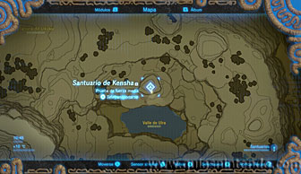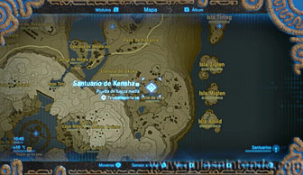
Para llegar a él tienes que usar una corriente de aire ascendente que sale desde el fondo del acantilado.
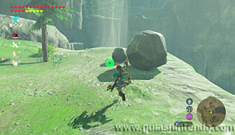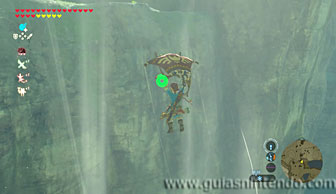
Después debes dirigirte planeando a unas rocas rompibles que verás en la pared, justo debajo del saliente que hay en la parte superior del acantilado.
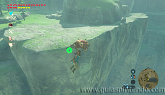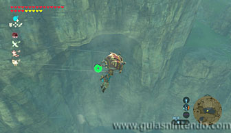
Saca el arco para disparar a las rocas una flecha bomba y después continúa planeando para llegar a la entrada.
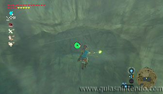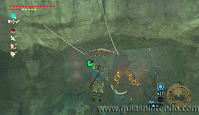
Una vez dentro solo debes derrotar a un miniguardián 3.0.
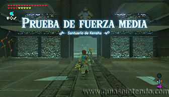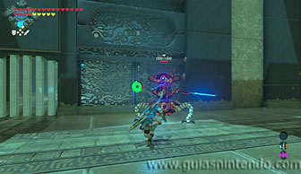
El cofre que está de camino al altar contiene un zafiro. Ábrelo y después ve al altar para conseguir el símbolo de valía correspondiente.
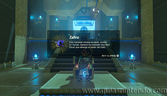